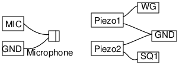

Schematic

- Two sound waves with nearby frequencies generates beats, if they are
allowed to interfere.
Instructions
- Make the connections. Keep the mic facing the buzzers, 4 to 5 cm apart.
- Enable Measurements
- Enable WG and then SQ1. Adjust distances to get proper beat pattern